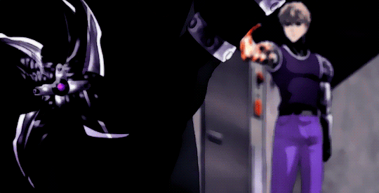
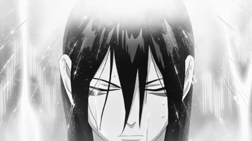

Bitácora de Laboratorio 2026
Alumno: Gudiño Mateo Jeremías - 5to Año
Diagnóstico de Componentes
Ver Ficha Técnica CompletaPlaca Base
El Procesador (CPU), Refrigeración y Límites de Hardware
Memoria RAM y Subsistemas de Almacenamiento
Tarjeta Gráfica (GPU) y Procesamiento Visual
Energía (PSU) y Dinámica de Fluidos (Gabinete)
Periféricos y Dispositivos de E/S (Entrada/Salida)
Presupuesto Técnico y Armado a Medida
Protocolo de Seguridad e Insumos
Placa Madre
Modelo: Mother Asrock Z890 TAICHI LITE WIFI LGA1851 DDR5
Microprocesador
Modelo: Intel(R) Core(TM) i5-10400 CPU @ 2.90GHz
Arquitectura: 64 bits, x64

Memoria RAM
Capacidad: 16.0 GB instalada (15.8 GB utilizable)
Tarjeta Gráfica (GPU)
Modelo: [NVIDIA GeForce GTX 1650]
Almacenamiento
Tipo: Disco Solido Ssd Kingston 480gb Color Negro
Fuente de Alimentación (PSU)
Fuente Thermaltake Smart BX1 650W RGB 80 Plus Bronze
Sistema de Refrigeración
Tipo: Disipador por aire
Gabinete (Chasis)
Gabinete XYZ Airone 100 Mesh Black 3x140mm + 3x120mm ARGB Fans Vidrio Templado
Periféricos y Dispositivos E/S
Interfaces físicas de comunicación con el usuario.

Monitor (Salida)
Resolución: 1920x1080 (Full HD) a 75Hz
Teclado y Mouse (Entrada)
Conectividad: USB Mouse gaming Griffin M607 | Redragon y Teclado Mecanico Redragon Kumara K552 RGB Outemu Red ESP
Auriculares (Salida/Entrada)
Modelo: Auricular Gamer Thonet & Vander VX730 RGB 7.1 Cuero PC/PS4/PS5/XBOX
Conectividad: Bluetooth
Proyectos Arduino e IoT
Aplicación práctica de programación en C++ y electrónica para resolver problemas del mundo real.

Practicos Arduino
Hardware: Placa Arduino y Variado.
Proyectos Simples Variados
Ver Practicos
Simon Dice
Hardware: Placa Arduino, ESP32, Luz Led, Botón, Buzzer, lcd1602, .
Lógica: Botones presionables para recordar el orden de las luces.
Ver Código y Circuito